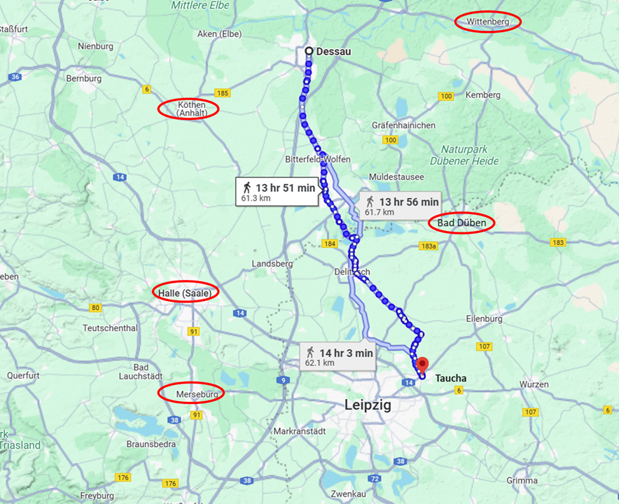
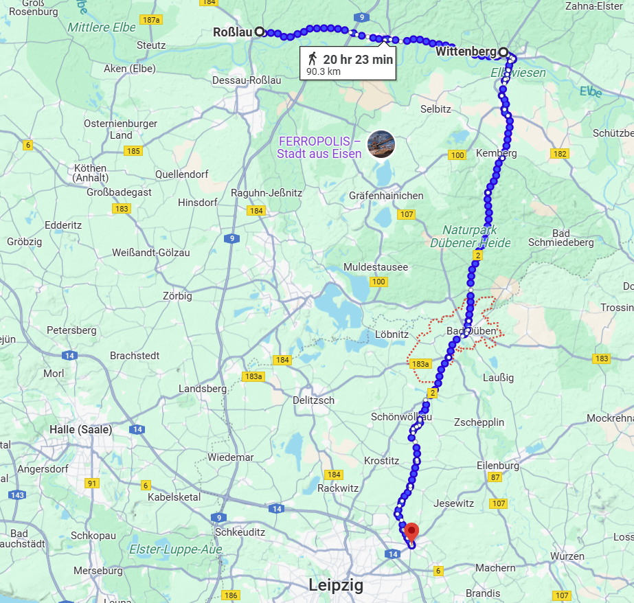
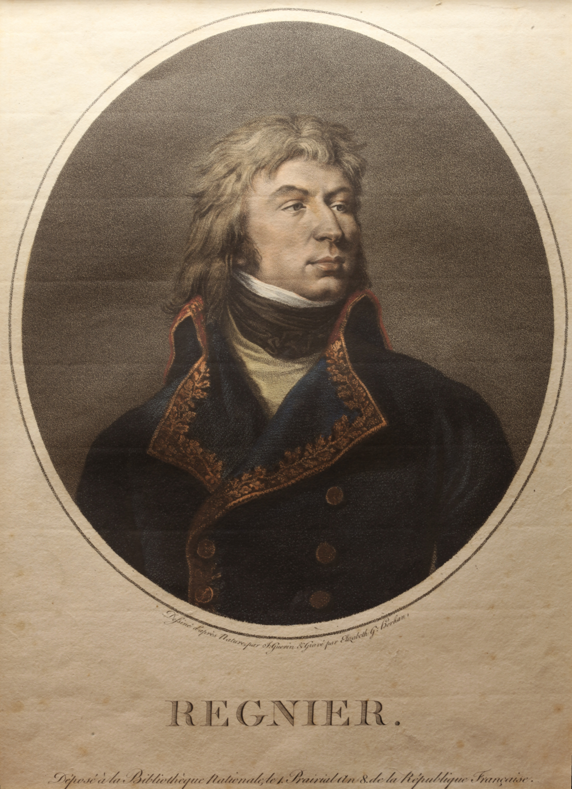
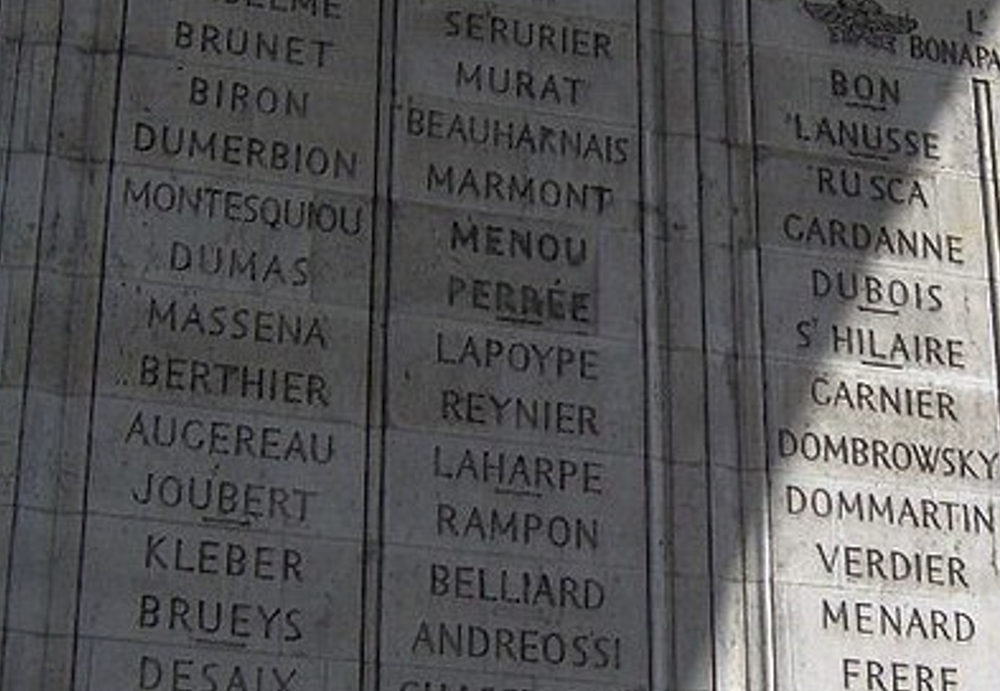
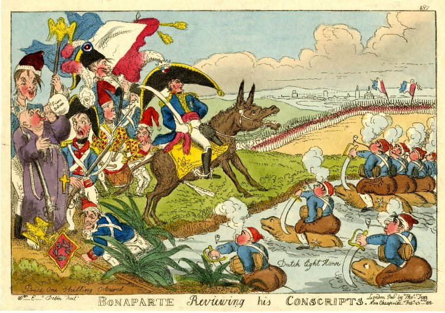
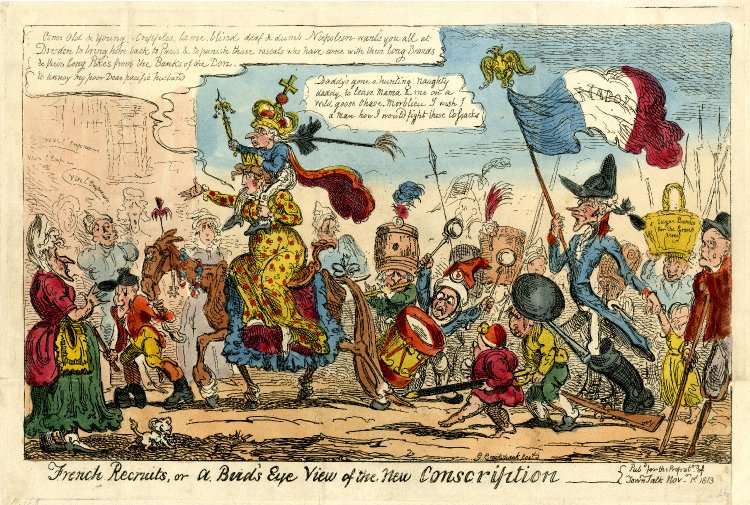

라이프치히로 가는 길 (26) - 나폴레옹의 변덕
게시: 2025-04-28T06:30:37+09:00
나폴레옹이 빋은 편지는 바로 전날인 10월 11일 뮈라가 보낸 것이었습니다. 10일에 보르나에서 비트겐슈타인의 러시아군을 무찌르고 전선을 확보했다던 뮈라는 불과 하룻만에 전혀 다른 소식을 전했습니다. 슈바르첸베르크가 후퇴하는 듯 하더니 오히려 더 증강된 병력을 내세워 전진하고 있으며, 중과부적으로 자신은 이미 라이프치히 외곽인 크뢰번(Cröbern)까지 후퇴했다는 소식이었습니다. 이건 뷔르첸까지 진격했을 때 이미 예상했던 상황이었습니다. 불과 5만 정도의 병력을 가진 뮈라가 몇 배의 병력을 거느린 슈바르첸베르크의 북진을 언제까지 막아낼 수는 없었습니다. 바로 이런 상황을 예측했던 나폴레옹은 이미 전군을 작센에서 빼내 엘베강 우안으로 건너가 식량이 풍부한 브란덴부르크에서 작전을 펼치기로 모든 계획을 짜놓고 있었습니다. 뮈라에게는 토르가우로 후퇴한 뒤 거기서 엘베강을 건너 자신과 합류하라고 하면 되었습니다. 그러나 여기서 나폴레옹은 갑자기 모든 계획을 바꿔버립니다. 뮈라의 편지를 받은지 불과 30분 후, 나폴레옹은 참모장 베르티에게 편지를 써서 데사우에 있을 네에게 당장 전군을 돌려 라이프치히 북동쪽의 타우차(Taucha)로 달려오되, 반드시 10월 14일 이전에 도착하라는 명령서를 전달하도록 지시했습니다. 네뿐만 아니라 나폴레옹은 막도날, 베르트랑, 세바스티아니 등 모든 장군들에게 10월 14일, 행군 거리가 먼 레이니에 등에게는 늦어도 15일까지는 타우차로 달려갈 것을 명령했습니다. 그는 슈바르첸베르크와 라이프치히에서 결전을 벌이기로 한 것입니다. 대체 갑자기 왜 계획을 바꾸었을까요?

(데사우에서 타우차까지는 60km가 넘는 거리로서 정상적인 행군이라면 3일 정도 걸리는 거리입니다. 바로 직전에 아일렌부르크에서 데사우까지 강행군으로 올라갔던 네의 병사들에게, 다시 전속력으로 원래 출발지 근처인 타우차까지 2일만에 내려가라는 명령은 정말 사기를 떨어뜨리는 짓이었습니다. 나폴레옹이 부하들을 이끌고 이 산에 올랐다가 '이 산이 아니라 저 산인 모양이다'라며 내려와 저 산에 올라간 뒤 '아까 그 산이 맞네'라고 말했다는 실없는 농담이, 사실 근거가 전혀 없는 것이 아닙니다. 지도 왼쪽 위의 붉은 원으로 표시된 쾨텐(Köthen)을 눈여겨 봐두십시요. 나폴레옹의 결론과는 반대로, 당시 베르나도트는 엘베강 북쪽이 아니라 쾨텐에 있었습니다.)

(문제는 이미 엘베강을 건너 비텐베르크의 포위를 푼 뒤 로쓸라우까지 진격한 레이니에의 제7군단과 그에 딸린 지원 기병군단 등등이었습니다. 로쓸라우-데사우의 부교가 파괴된 뒤였으므로 이들은 다시 비텐베르크까지 엘베강을 거슬러 올라간 뒤 거기서 다시 엘베강을 건너고, 바트 뒤벤에서 멀더강을 건넌 뒤에야 타우차에 도착할 수 있었습니다. 그로 인해 늘어나는 거리는 30km 정도로서, 하루 이상의 행군이 더 필요했습니다. 나폴레옹은 이들에게도 무슨 수를 써더라도 10월 15일까지는 타우차에 도착하라고 엄명을 내렸습니다.)

(레이니에는 당연히 10월 15일까지 도착 못하고 이틀 정도 늦게 도착했습니다. 그러나 그의 제7군단이 일으킨 진짜 문제는 지각이 아니었습니다. 그 이야기는 나중에... 레이니에는 다행히 여기서 전사하지는 않고 포로가 되었는데, 다음 해인 1814년 2월 파리에 도착한 지 2주만에 통풍으로 사망합니다. 통풍이 흔히 맥주와 치킨 많이 먹으면 걸리는 손가락 발가락 관절병으로만 아시는 분들이 많은데, 나름 무서운 병입니다. 건강 관리 잘합시다. 이 초상화에서 레이니에의 스펠링이 Reynier가 아니라 Regnier로 되어 있는 부분이 인상적이네요. 프랑스어에서 gn는 yn로 발음되는 경우가 많습니다.)

(궁금해서 뒤져보니 파리 개선문에는 레이니에의 이름이 Regnier가 아니라 Reynier로 표기되어 있습니다.) 실은 진작에 이랬어야 했습니다. 그는 바트 뒤벤에서 블뤼허를 놓치자마자 즉각 전군을 이끌고 뮈라와 합류하여 슈바르첸베르크를 쳐야 했었습니다. 연합군을 물먹어기 위해 엘베강을 건너 베를린으로 향한다? 이건 자신이 블뤼허-베르나도트에게 물을 먹었다는 사실을 스스로 부정하기 위해 만들어낸 망상에 불과했습니다. 브란덴부르크로의 진격 작전의 허무맹랑함에 대해서는 나중에 할러로 이동했던 블뤼허와 그나이제나우가 '나폴레옹이 엘베강을 건너 베를린으로 간다더라'는 첩보를 접하고 보인 반응에서도 그대로 드러납니다. 그들은 포로로 잡은 프랑스군으로부터 그런 풍문이 나돌고 있다는 이야기를 듣고는 '틀림없이 자신들을 꾀어내려는 나폴레옹이 퍼뜨린 헛소문에 불과'하다며 전혀 믿지 않았습니다. 그 상황에서 베를린으로 간다고 해서 나폴레옹이 얻을 것은 없지만 잃을 것은 많았기 때문이었습니다. 나폴레옹의 긴 전쟁 경력 중에, 그가 강력한 적 주력부대를 피해 엉뚱한 방향으로 전진한 경우는 없었는데, 그건 그럴만 한 이유가 있기 때문이었습니다. 누가 뭐래도 프랑스 민중의 지지를 기반으로 하는 독재자인 그에게는 프랑스 권력의 핵심인 파리와의 통신로가 너무 소중했습니다. 드레스덴-토르가우-비텐베르크-마그데부르크로 이어지는 엘베강 방어선은 언듯 보기에는 막강해보였지만 지나치게 길게 늘어진 방어선으로는 절대 연합군을 막을 수 없었습니다. 오히려 그 긴 방어선 중 하나만 끊어져도 마그데부르크-베젤 간 도로를 통해 이어지는 파리와의 통신로를 위협 받아 나폴레옹은 난처한 처지에 빠질 수 있었습니다. 실제로 나폴레옹은 내선이동의 이점을 가지고도 바로 며칠 전, 블뤼허의 슐레지엔 방면군 하나도 제대로 막아내지 못해 바르텐부르크에서 방어선이 뚫린 바 있었습니다. 그나마 잘못 일고 있던 정보였지만, 브란덴부르크로 후퇴한 베르나도트의 북부 방면군을 추격하여 끝장낸다는 것도 절대 이룰 수 없는 꿈에 불과했습니다. 베르나도트가 엘베강을 건너기 전에 잡았다면 모를까, 이제 나폴레옹이 엘베강을 건너 추격을 하는 입장이라면 절대 따라잡을 수 없었습니다. 나폴레옹은 듣고 싶은 이야기만 듣고 믿고 싶은 것만 믿는 와중에도, 본능적으로 이 모든 것을 이미 알고 있었습니다. 만약 베르나도트의 북부 방면군이 엘베강을 건너 도망친 것이 사실이라면, 그만큼의 병력이 빠진 상태의 연합군과 지금이라도 싸우는 것이 더 유리했습니다. 할러 쪽으로 도망친 블뤼허가 라이프치히로 달려올 가능성이 높았지만, 그에 대해서는 마르몽의 제6군단을 그쪽으로 보내 견제하도록 하면 라이프치히에서 고립된 슈바르첸베르크와 결전을 벌일 수 있을 것 같았습니다. 슈바르첸베르크의 보헤미아 방면군을 패배시킬 수 있다면, 모든 것이 한 번에 해결될 수 있었습니다. 비록 나폴레옹이 부하 원수들에게는 큰소리를 쳐대고 있었지만, 파리에서는 바로 며칠 전인 10월 9일 1815년에나 징집 연령인 20세가 될 18세 소년들 16만 명에 대한 징집 명령이 내려진 상황이었습니다. 1814년에 징집 연령이 되는 19세 소년들은 이미 1월과 4월에 연달아 칙령을 내려 조기 입대를 시켰기 때문이었습니다. 이런 조치가 프랑스 국민들의 사기에 어떤 영향을 줄지 나폴레옹은 잘 알고 있었습니다. 이 모든 위기로부터 나폴레옹을 구해줄 것은 아무 실속이 없는 베를린 점령 따위가 아니라, 결정적인 승리와 그에 따를 평화 협정뿐이었습니다.

(1813년 영국 잡지에 실린 '징집병들을 사열하는 나폴레옹'이라는 만화입니다. 그림 왼쪽에 나폴레옹 뒤에 선 징집병들은 어딘가 많이 모자라 보이는 애들로 그려졌는데 술주정뱅이 수도사까지 포함되어 있습니다. 오른쪽 연못에 떠있는 애들은 네덜란드에서 징집한 기병들인데, 말 대신 두꺼비를 타고 있습니다.)

(역시 1813년 영국 잡지에 실린 만화입니다. 이 만화에서 말을 탄 채 우스꽝스러운 징집병들의 선두에 선 여자가 황후 마리-루이즈이고 그 어깨 위에 올라탄 아이가 나폴레옹의 적자 로마왕입니다. 1813년의 소년병 징집 칙령서에 서명한 사람이 마리-루이즈였기 때문에 저 신병들은 '마리-루이즈'라고 불렸습니다. 마리-루이즈의 말풍선에는 이런 부적절한 말이 쓰여 있습니다. "늙은이들과 어린애들이여 오라. 불구, 절름발이, 맹인, 농인, 모자란 친구들도 오라. 나폴레옹이 너희 모두를 드레스덴으로 부르신다. 그래야 그 분이 파리로 오실 수 있다.") 하지만 상황은 나폴레옹이 머리 속으로 그리는 것보다 훨씬 더 긴박하게 돌아가고 있었습니다. 뮈라의 보고대로, 10월 11일 비트겐슈타인, 클라이스트, 클레나우 등의 연합군이 페니히(Penig) 뿐만 아니라 라이프치히에서 불과 30km 남쪽인 보르나(Borna)를 점령했습니다. 또 베니히센의 폴란드 방면군이 드레스덴에 도착하여 오스테르만-톨스토이의 2만으로 드레스덴의 생시르 제11군단과 대치하게 한 뒤 나머지 3만으로 라이프치히로 오고 있었습니다. 뿐만 아니라 나폴레옹의 골치덩어리였던 블뤼허는 할러를 점령한 뒤 생프리스트(St. Priest)의 러시아군 1만2천을 그 남쪽으로 파견하여 머서부르크(Merseburg)를 점령하고 거기서 보헤미아 방면군과의 연락을 주고 받는데 성공했습니다. 그리고 무엇보다도, 나폴레옹이 제멋대로 결론 내린 것과는 정반대로, 베르나도트는 엘베강을 건넌 것이 아니라 잘러강을 건넜습니다. 당시 베르나도트는 할러 북쪽의 쾨텐(Köthen)에 그의 북부 방면군을 집결시키고 나폴레옹이 데사우-로쓸라우에서 삽질하는 것을 주의 깊게 지켜보며 이들이 브란덴부르크로 전장을 옮기려 한다고 정확하게 판단하고 있었습니다. Source : The Life of Napoleon Bonaparte, by William Milligan Sloane Napoleon and the Struggle for Germany, by Leggiere, Michael V With Napoleon's Guns by Colonel Jean-Nicolas-Auguste Noël https://www.britannica.com/event/Napoleonic-Wars/Dispositions-for-the-autumn-campaign https://www.napoleon.org/en/history-of-the-two-empires/timelines/1813-and-the-lead-up-to-the-battle-of-leipzig/ http://www.historyofwar.org/articles/campaign_leipzig.html https://en.wikipedia.org/wiki/Marie-Louise_(conscript) https://en.wikipedia.org/wiki/Jean_Reynier https://military-history.fandom.com/wiki/Names_inscribed_under_the_Arc_de_Triomphe